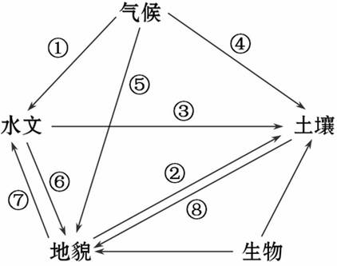
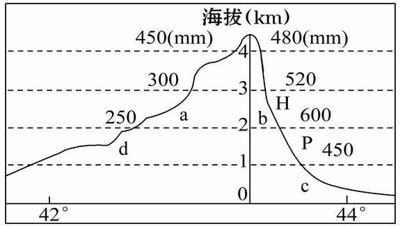
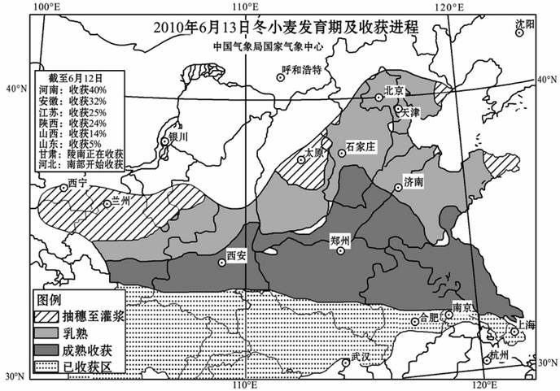
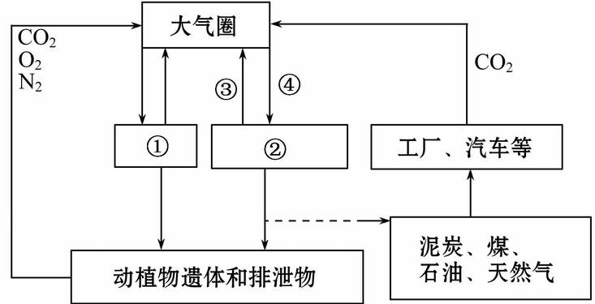
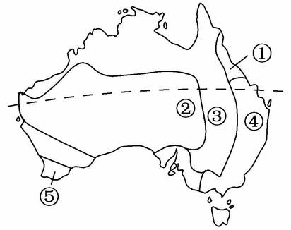
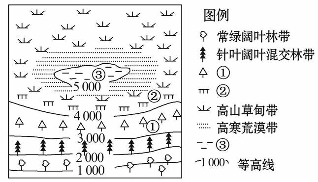
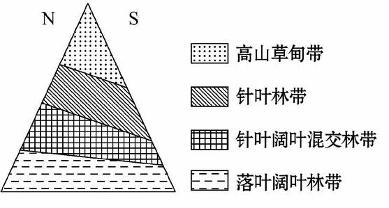
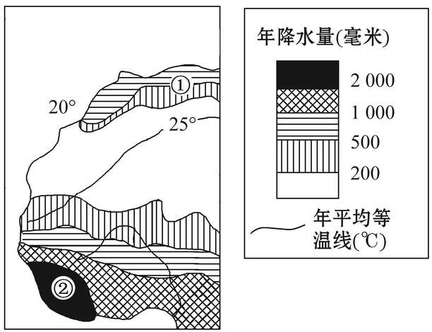
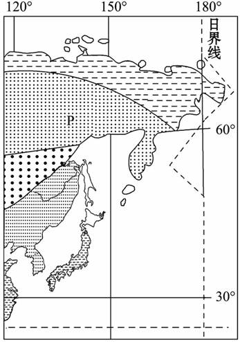
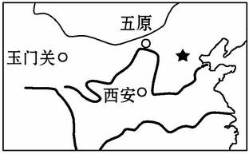

None - Fade - Slide - Convex - Concave - Zoom
选择班级
幻灯片样式
Black (default) -
White -
League -
Sky -
Beige -
Simple
Serif -
Blood -
Night -
Moon -
Solarized
下图为陆地环境主要构成要素的相互关联图，读图完成1、2题。
1.松花江和珠江水文特征不同，关键是图中哪个箭头所起的作用( )
A.①
B.②
C.③
D.④
2.能表示黄土高原千沟万壑地貌特征形成原因的箭头是( )
A.⑤
B.⑥
C.⑦
D.⑧
3.造成黄淮海平原和南方低山丘陵区两地自然地理环境差异的两个基本要素是 ( )
①土壤 ②地貌 ③水文 ④气候
A.①②
B.①③
C.①④
D.②④
读新疆某山地沿某经线的地形剖面图及与其对应的年平均降水量资料，回答4、5题。
4.若此山地有森林带分布，则最可能分布在( )
A. a
B. b
C. c
D. d
5.关于该山地的说法，正确的是( )
A.南坡雪线高于北坡
B.南坡降水量多于北坡
C.南坡自然带较北坡复杂
D.当地牧民把牛羊赶到H处草场放牧
时，一般是冬季
下图为2010年我国冬小麦发育期及收获进程示意图，读图回答6～8题。
6.我国冬小麦发育期及收获进程的分布基本是( )
A.沿经线延伸，随经度变化
B.沿经线延伸，随纬度变化
C.沿纬线延伸，随纬度变化
D.沿纬线延伸，随经度变化
7.形成这种分布的主要影响因素是( )
A.气温
B.降水
C.地形
D.科学技术
8.这种分布体现的地域分异规律是( )
A.由赤道到两极的地域分异
B.从沿海向内陆的地域分异
C.非地带性地域分异
D.山地的垂直地域分异
读下图，回答9、10题。
9.此图可以简单看做是“地理环境中的碳循环”。能正确表示图中字母代表的地理事象的是( )
A.①动物 ②绿色植物 ③O2 ④CO2
B.①动物 ②绿色植物 ③CO2 ④O2
C.①绿色植物 ②动物 ③CO2 ④O2
D.①绿色植物 ②动物 ③O2 ④CO2
10.此图还可以说明( )
①人类活动可以改变大气中二氧化碳的浓度
②自然地理环境的物质处在不断的运动和变化中
③自然地理环境要素会“牵一发而动全身”
④自然地理环境是一个相互联系和相互制约的“整体”
A.①②④
B.②③④
C.①②③
D.①②③④
读澳大利亚自然带分布图，回答11、12题。
11.和①自然带的形成无关的因素是( )
A.暖流
B.山脉迎风坡
C.大气环流
D.寒流
12.⑤处自然带的名称是( )
A.温带落叶阔叶林带
B.亚热带常绿硬叶林带
C.热带草原带
D.温带草原带
读我国某山地垂直自然带示意图，完成13、14题。
13．图中①②③代表的自然带依次是( )
A．针叶林带、高山灌木林带、积雪冰川带
B．针叶林带、积雪冰川带、高山灌木林带
C．高山灌木林带、针叶林带、积雪冰川带
D．积雪冰川带、高山灌木林带、针叶林带
14．该山南坡比北坡垂直自然带显著的主要原因可能是南坡
( )
①纬度低 ②相对高度大 ③向阳坡 ④迎风坡
A．③④
B．②④
C．①③④
D．②③④
读下面某沿海地区一山地垂直自然带分布图，回答15、16题。
15．该山地可能位于( )
A．北半球温带地区
B．北半球亚热带地区
C．南半球温带地区
D．南半球亚热带地区
16．若该山地山麓的年平均气温为12℃，则该山地的海拔不超过( )
A．1 000米
B．2 000米
C．3 000米
D．4 000米
17．读某大陆局部地区年降水量和年均温等值线图，图中①、②两地分布的自然植被分别是( )
A．亚热带常绿硬叶林、热带雨林
B．热带草原、热带雨林
C．热带草原、亚热带常绿硬叶林
D．温带落叶阔叶林、亚热带常绿硬叶林
下图为亚洲东部某区域陆地自然带分布图，读图，完成18、19题。
18．图示自然带的分布主要体现了( )
A．由赤道到两极的地域分异规律
B．从沿海向内陆的地域分异规律
C．垂直地域分异规律
D．非地带性分异规律
19．自然带P在大陆东岸分布纬度较低，其主要原因是( )
A．地形因素
B．洋流因素
C．太阳辐射
D．大气环流
20.下列属于地带性分布的是( )
A.南半球缺少苔原带
B.尼罗河沿岸的“绿色走廊”
C.天山山麓的绿洲
D.塔克拉玛干沙漠
21.下列描述的植被变化属于从沿海向内陆的地域分异的是
( )
A.秦岭南坡比北坡林木茂盛
B.横断山区垂直自然带谱明显
C.乘火车看到从连云港到乌鲁木齐沿途植被发生明显变化
D.乘飞机看到从海南省到漠河镇沿线植被发生明显变化
我国西北地区生态环境十分脆弱，据此回答22、23题。
22.从自然地理环境的整体性分析，下列地理现象中与我国西北内陆景观不相符的是( )
A.气候干旱，降水较少
B.化学风化微弱，物理风化剧烈
C.流水侵蚀显著，风力侵蚀微弱
D.植物稀少，土壤贫瘠
23.内蒙古、青海等地大量挖掘“发菜”、“甘草”，导致植被破坏、环境恶化，反映了( )
①自然地理环境具有整体性
②自然地理环境具有差异性
③陆地环境各要素之间相互联系、相互制约、相互渗透
④某一要素的改变将会导致其他要素甚至整个环境状态的改变
A.①②③B.①②④C.①③④D.②③④
24.下列诗句中描述了垂直地域分异规律的是( )
A．羌笛何须怨杨柳，春风不度玉门关
B．南枝向暖北枝寒，一种春风有两般
C．人间四月芳菲尽，山寺桃花始盛开
D．才从塞北踏冰雪，又向江南看杏花
25.“五原春色归来迟，二月垂杨未挂丝。即今河畔冰开日，正是长安(今西安附近)花落时”诗歌中描述的现象( )
A.反映了由赤道到两极的
地域分异规律
B.是由两地的水分差异造
成的
C.是由流经两地的河流流
量不同造成的
D.是一种非地带性现象
